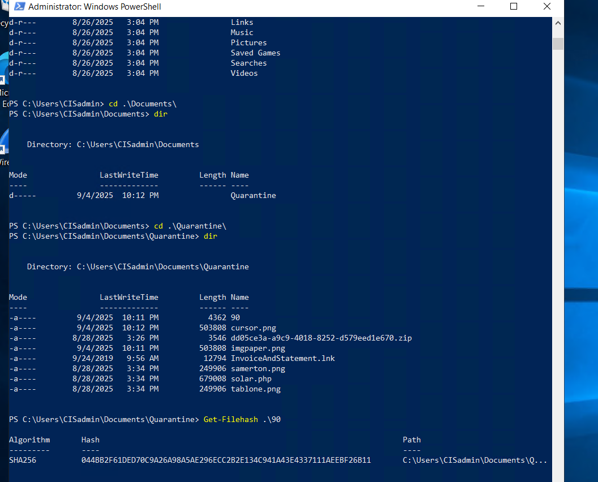

Project Overview
In this lab I worked through the “Catbomber” scenario, which simulates a malware infection
inside a company network. I used Wireshark and a PCAP file to figure out which machines
were infected, what data was stolen, and which files were actually malicious.
How I Approached It
• Started by opening the PCAP and looking at high-level HTTP and TLS traffic.
• Followed specific TCP streams to see what data was being sent out from clients.
• Used IP configuration data in the packets to tie activity back to hostnames and users.
• Exported suspicious files from the capture, hashed them, and checked them on VirusTotal.
• Looked at post-infection TLS traffic and certificates to spot command-and-control behavior.
Screenshots & Analysis

Primary Infected Client
Following one of the HTTP streams shows a system report that includes the hostname
Cat-Bomb-W7-PC with IP address 10.5.28.229. This becomes
our first confirmed infected workstation.

Second Infected Client
Another HTTP stream shows a different host, Catbomber-DC, with IP
10.5.28.8. The usernames match the first machine, which suggests the same
user is compromised on multiple devices.

Stolen Email Credentials
By following another HTTP stream from 10.5.28.229, I see the user’s Outlook
email address and password being sent to the attacker over clear-text HTTP. This confirms
that credentials are being exfiltrated, not just system info.

Pulling Malware from the PCAP
Using File → Export Objects → HTTP in Wireshark, I extract suspicious files like
cursor.png and save them into a quarantine folder so they can be analyzed
without touching the live network.

Hashing & Checking the File
In PowerShell I generate a file hash for the extracted PNG and submit it to VirusTotal.
This lets me check quickly whether security vendors have already seen this file in the wild.

Confirmed Indicators of Compromise
VirusTotal shows that 61 out of 72 vendors flag cursor.png as a trojan,
which confirms it as a strong Indicator of Compromise for this environment.

Suspicious Post-Infection Traffic
Looking at TLS sessions on ports 443, 447, and 449, I find a certificate whose
commonName is simply example.com. Combined with the other
evidence, this points to malicious command-and-control traffic rather than normal web use.
Key Takeaways
By walking through the PCAP step by step, I was able to identify two infected hosts, see exactly
what data left the network, and confirm which files were malware. This is the kind of workflow
you’d use in a real incident: use traffic to rebuild what happened instead of guessing.